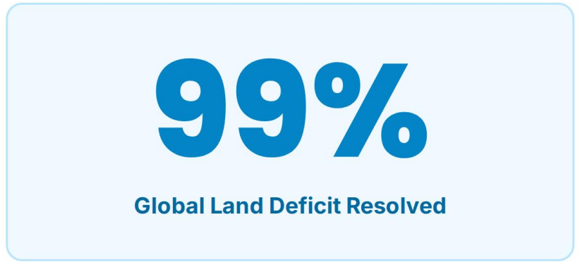
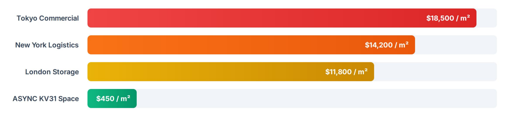
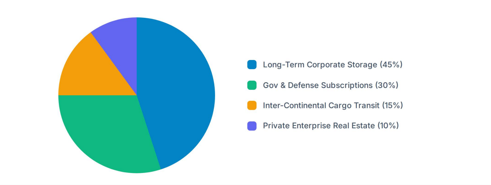

Sub-Level 37: Hydro-Spatial Architecture ("Poolrooms")
Our upcoming primary objective focuses on stabilizing vast, interconnected aquatic structures characterized by ambient light, non-Euclidean tiling, and static atmospheric pressure.

What we've achieved with our latest innovations.

By establishing stable Threshold access into Project KV31 (The Complex), ASYNC effectively eliminates global real estate constraints.
Earth's growing agricultural, industrial, and urban density problems can be instantly mitigated by transferring physical storage, logistics hubs, and heavy data centers into secondary spatial dimensions.
Our research combines engineering, spatial science, and long-term field observation. Project KV31 is the institute's most ambitious program to date.

Project KV31 delivers a 96.2% operational cost reduction per square meter compared to prime metropolitan real estate on Earth, disrupting traditional commercial property markets worldwide.

Diversified commercial leasing structures guarantee recurring subscription revenues from sovereign entities and top-tier global logistics corporations.
Show more
Our upcoming primary objective focuses on stabilizing vast, interconnected aquatic structures characterized by ambient light, non-Euclidean tiling, and static atmospheric pressure.

Initiating exploratory soil analysis and atmospheric sampling within boundless agricultural expanses under artificial daylight cycles.

Surveying artificial suburban layouts suspended in low-light environments and mapping non-linear roadways before establishing observation towers.
Patch v2.4.3 release: fixing minor bugs and issues.